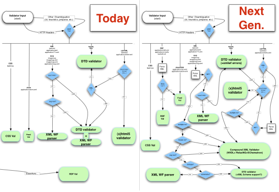

This page holds the development roadmap for the W3C Markup Validation Service.
The current validator is mostly based on an DTD parser, with an XML parser used only for some checks. It also plugs into an html5 parser for the validation of HTML5 content. In the future, other engines should be used to check compound XML documents (with NVDL+relax, XML Schema, Schematron - using e.g the relaxed engine)
The following flowchart describes the validation engine architecture, as it is now, and as we envision it in the near future.

(follow link to enlarge, or download the vector-based
graffle,
PDF or
SVG version)
@@ TODO @@ add these as Bugzilla entries
Interface with an NVDL+RelaxNG engine for validation of compound XML documents (coding the interface will be similar to the one done for hTML5 engine)
Choose the right NVDL+RelaxNG engine. relaxed and validator.nu provide such capability, and of course there is the option to roll our own (jing, etc).
Change check code to send multiple-namespace XML documents to NVDL+RelaxNG engine
Interface with the feed validator, RDF validator and CSS validator programatically (instead of redirecting, as done today)
The Markup Validator receives 1M requests per day, and is only in English. Making it multiligual would make the tool easier to use for web developers and designers worldwide. Although this may be technically tricky (given the number of message/engine sources), the community would be very excited in participating in the translation effort.
The markup validator currently checks a single page. Some companion software (such as the log validator) could be made into a web service to provide crawling, batch validation, scheduled checks etc.
This may be in the roadmap for Unicorn rather than the markup validator, but it fits in the "long-term" vision of developing the W3C Web Quality services. Checking of RDDL, RDFa, microformats and other rich markup are in scope. Many other checks could be added to the validators, such as:
Most of our tools, and especially the "star" HTML validator, have a binary "valid/invalid" way of presenting their results. While this is useful for some, it tends to make people look away from the "big picture" of web quality. A new one-stop quality checker could help bring a paradigm shift by showing diverse aspects of web quality, while systematically suggesting solutions for every problem. This would involve working with designers to find ways to present aggregated quality information in a clear and positive manner.
{kind=link}
{kind=link}